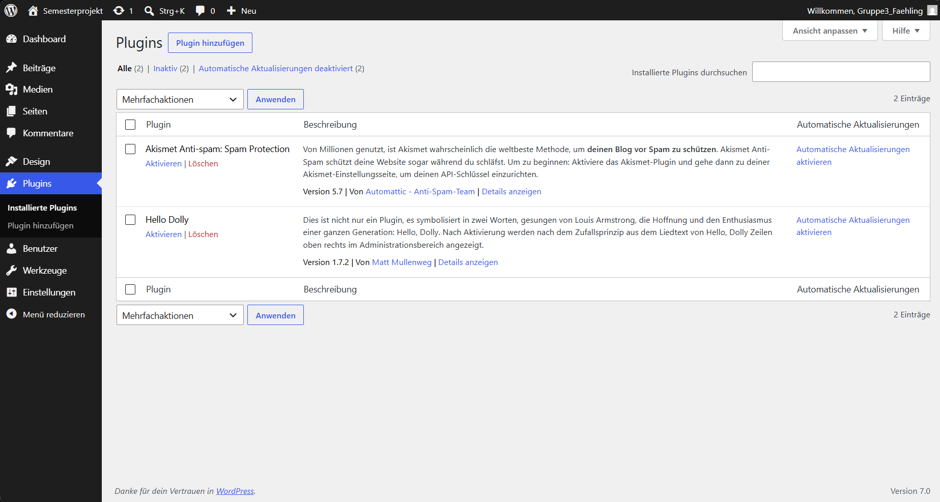
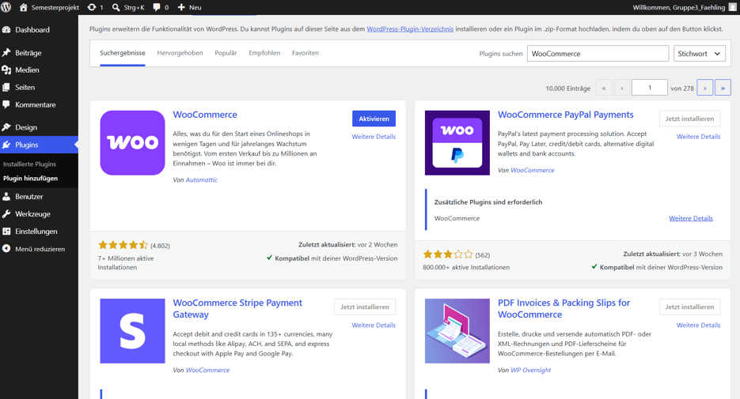

Installationsanleitung
Zur Installation von dem CMS WordPress auf einer VM oder einem Server, sollte bevorzugt Ubuntu, Linux oder Debian als Betriebssystem laufen. Um mit der Einrichtung zu starten, verbindet man sich per SSH mit dem Server. Für die Verbindung sollte man den Root-User oder einen Benutzer mit root-Rechten nutzen. Die Verbindung baut man über folgenden Befehl auf:
ssh benutzer@server_ip
Nach dem erfolgreichen Verbinden mit dem Server, sollte zuerst das System aktualisiert werden. Dies wird gemacht, um sicherzustellen, dass alle Pakete auf dem neusten Stand sind:
sudo apt update
sudo apt upgrade -y
Im nächsten Schritt werden alle benötigten Pakete installiert. Dazu gehören der Webserver „Apache", die Datenbank „MariaDB" sowie PHP und alle für WordPress notwendigen PHP-Erweiterungen. Diese bilden die technische Grundlage für die Anwendung:
sudo apt install apache2 mariadb-server php php-mysql libpache2-mod-php php-cli php-curl php-xml php-mbstring php-zip unzip curl -y
Nachdem diese Installation durchgelaufen ist, kann sowohl der Webserver als auch die Datenbank, bzw. der Datenbankserver gestartet werden. Hierbei aktiveren wir gleich, dass diese beim Systemstart automatischen starten und mitlaufen:
sudo systemctl enable apache2
sudo systemctl start apache2
sudo systemctl enable mariadb
sudo systemctl start mariadb
Nun richten wir die Datenbank für WordPress ein. Dazu melden wir uns zuerst in der Datenbank von Mariadb an. Danach erstellen wir eine neue Datenbank und richten einen neuen Benutzer für WordPress ein. Dieser Nutzer soll zur Sicherheit nur rechte für diese Datenbank erhalten und keine andere.
sudo mysql -u root -p
CREATE DATABASE wordpress DEFAULT CHARACTER SET utf8mb4 COLLATE utf8mb4_unicode_ci;
CREATE USER \'wpuser\'@\'localhost\'IDENTIFIED BY \'ihr eigenes starkes Passwort\';
GRANT ALL PRIVILEGES ON wordpress.* TO \'wpuser\'@\'localhost\';
FLUSH PRIVILEGES;
EXIT;
Sobald dieser Schritt geschaft ist und die Datenbank damit bereit ist, können wir Anfangen WordPress herunterzuladen und im Webverzeichnis zu installieren. Dafür müssen wir zunächst in das Standard-Webverzeichnis von Apache wechseln:
cd /var/www/html
Danach kann angefangen werden WordPress von der offiziellen Seite herunterzuladen und zu entpacken:
sudo curl -O https://de.wordpress.org/latest-de_DE.tar.gz
sudo tar -xvzf latest-de_DE.tar.gz
sudo mv wordpress/* .
sudo rm -rf wordpress latest-de_DE.tar.gz
Als nächstes müssen wir WordPress konfigurieren. Dafür müssen wir die Beispielkonfigurationsdatei kopieren, öffnen und anschließend bearbeiten, sodass wir die zuvor erstellen Datenbankzugangsdaten eintragen können:
sudo cp wp-config-sample.php wp-config.php
sudo nano wp-config.php
define(\'DB_NAME\', \'wordpress\');\ define(\'DB_USER\', \'wpuser\');\ define(\'DB_PASSWORD\', \'SEHR_STARKES_PASSWORT\');\ define(\'DB_HOST\', \'localhost\');
Damit die Domain korrekt auf die WordPress-Installation zeigt, wird anschließend geprüft ob ein Virtual Host im Apache Webserver erstellt wurde. Dazu öffnet man die Konfigurationsdatei vom Apache Webserver:
sudo nano /etc/apache2/sites-available/000-default.conf
In dieser Datei sollte nun die Domain definiert sein und das WordPress-Verzeichnis als Root-Verzeichnis gesetzt werden. Wenn wie beschrieben WordPress in /var/www/html installiert wurde, muss das Root-Verzeichnis nicht mehr gesetzt werden:
\<VirtualHost *:80>\ serverName ihre-domain.de\ DocumentRoot /var/www/html\ \ ErrorLog \${APACHE_LOG_DIR}/error.log\ CustomLog \${APACHE_LOG_DIR}/access.log combined\ \</VirtualHost>
Anschließend muss der Apache Server neu geladen werden um gemachte Änderungen zu speichern und zu laden:
sudo systemctl reload apache2
Bereits hier kann man nun versuchen das erstmal mit der Website zu verbinden. Sollte die Wordpress-Anmeldeseite auftauchen, so hat das html-Verzeichnis die bereits benötigten Rechte. Sollte dies jedoch nicht der Fall sein so werden anschließend die Dateirechte angepasst:
sudo chown -R www-data:www-data /var/www/html\ sudo chmod -R 755 /var/www/html
Damit Wordpress von außen erreichbar ist, müssen die benötigten Netzwerkports auf dem Server oder der VM freigegeben werden. Zum einen müssen SSH-Zugriff erlaubt werden, um die Verbindung zum Server/VM nicht zu verlieren von man die Firewall aktiviert. Zudem müssen die Ports 80 und 443 freigegeben werden.
Für Ubuntu Server ist der Befehl:
sudo ufw allow OpenSSH\ sudo ufw allow \'Apache Full\'
sudo ufw enable
Danach kann man den Status der Firewall überprüfen, indem man sudo ufw status eingibt.
Der Eintrag Apache Full bedeutet, dass sowohl Port 80 (HTTP) als auch Port 443 (HTTPS) für eingehende Verbindungen freigegeben sind. Damit Besucher die Webseite über einen Webbrowser erreichen können, muss zusätzlich ein Webserver auf diesen Ports lauschen und gegebenenfalls ein SSL-Zertifikat für HTTPS eingerichtet sein.
[SSL-Zertifikat zur Verschlüsselung]{.underline}
Für die Nutzung von Zertifikaten kann sowohl ein Zertifikat von anderen Unternehmen ausgestellt werden als auch ein selbstsigniertes Zertifikat verwendet werden. Ein SSL Zertifikat ist zur Verschlüsselung der Verbindung da. Selbstsignierte Zertifikate werden bei der Verbindung mit der Website automatisch von Browsern als nicht vertrauenswürdig eingestuft, obwohl sie wie offizielle Zertifikate verschlüsseln. Dementsprechend erscheint beim Verbinden auch eine Sicherheitswarnung.
Um ein selbstsigniertes Zertifikat zu erstellen, nutzen wir OpenSSL. Das erstellt uns einen neuen privaten Schlüssel und ein selbstsigniertes Zertifikat:
sudo openssl req -x509 -nodes -days 365 -newkey rsa:2048 -keyout /etc/ssl/private/webshop.key -out /etc/ssl/certs/webshop.crt
Während der Erstellung werden einige Informationen abgefragt. Besonders wichtig ist der Wert für Common Name (CN). Hier sollte die Domain eingetragen werden, über die die WordPress-Installation erreichbar sein wird, beispielsweise:
Common Name (CN): meine-domain.de
Nach erfolgreicher Erstellung befinden sich die beiden Dateien im Verzeichnis:
/etc/ssl/certs/webshop.crt\ /etc/ssl/private/webshop.key
Der private Schlüssel sollte zudem ausschließlich für Root lesbar sein, weshalb wir diesen nochmal schützen müssen:
sudo chmod 600 /etc/ssl/private/webshop.key
Nun wird das SSL-Modul von Apache aktiviert:
sudo a2enmod ssl\ sudo a2enmod rewrite
Anschließend wird die SSL-Konfiguration angepasst:
sudo nano /etc/apache2/sites-available/default-ssl.conf
Der nachfolgende Teil sollte in der default-ssl.conf vorhanden sein. Wenn teile Fehlen müssen diese hinzugefügt werden:
\<VirtualHost *:443>\ ServerName meine-domain.de\ \ DocumentRoot /var/www/html\ \ SSLEngine on\ SSLCertificateFile /etc/ssl/certs/webshop.crt\ SSLCertificateKeyFile /etc/ssl/private/webshop.key\ \ \<Directory /var/www/html>\ AllowOverride All\ Require all granted\ \</Directory>\ \ ErrorLog \${APACHE_LOG_DIR}/wordpress_ssl_error.log\ CustomLog \${APACHE_LOG_DIR}/wordpress_ssl_access.log combined\ \</VirtualHost>
Danach kann die Datei gespeichert und geschlossen werden. Darauf hin aktivieren wir auch die gerade angepasste Datei:
sudo a2ensite default-ssl.conf
Um nun Besucher automatisch von http auf HTTPS umzuleiten, muss zusätzlich die Konfiguration unter Port 80 angepasst werden:
sudo nano /etc/apache2/sites-available/000-default.conf
\<VirtualHost *:80>\ ServerName meine-domain.de\ \ Redirect permanent / https://meine-domain.de/\ \</VirtualHost>
Danach überprüfen wir die Konfiguration auf ihren Syntax. Dabei sollte die Meldung Syntax OK kommen:
sudo apache2ctl configtest
Anschließend können wir den Webserver neu starten und den Webserver unter https erreichen:
sudo systemctl restart apache2
Für Testumgebungen, interne Netzwerke oder Entwicklungsserver sind selbstsignierte Zertifikate meist ausreichend. Für öffentlich erreichbare Webseiten wird hingegen empfohlen, ein Zertifikat einer offiziellen Zertifizierungsstelle zu verwenden.
[WordPress Einrichtung und Plugins]{.underline}
Sobald die Installation abgeschlossen ist und die Domain korrekt auf den Server zeigt, kann WordPress im Browser aufgerufen werden. Dazu öffnet man die Domain in einem Webbrowser:
https://deine-domain.de
Beim ersten Aufruf erscheint automatisch der WordPress-Installationsassistent. In diesem Schritt werden grundlegende Informationen zur Website festgelegt, darunter der Seitentitel, ein Benutzername für den Administrator, ein sicheres Passwort sowie eine E-Mail-Adresse. Nach Abschluss dieser Einrichtung ist die Installation vollständig abgeschlossen.
Der Login in den Administrationsbereich erfolgt anschließend über folgende URL:
https://deine-domain.de/wp-admin
Hier meldet man sich mit dem zuvor erstellten Admin-Benutzer und Passwort an. Nach erfolgreichem Login gelangt man in das WordPress-Dashboard, also die zentrale Verwaltungsoberfläche der Website.
Plugins erweitern WordPress um zusätzliche Funktionen wie Sicherheit, SEO, Kontaktformulare oder Performance-Optimierungen. Die Installation erfolgt direkt im Dashboard.
Nach dem Login navigiert man im linken Menü zu:
„Plugins → Installieren"

Im Suchfeld kann nun der Name eines gewünschten Plugins eingegeben werden, beispielsweise „Wordfence" für Sicherheit oder „Yoast SEO" für Suchmaschinenoptimierung.
Der Ablauf ist immer gleich:
-
Plugin im Suchfeld auswählen
-
Auf „Jetzt installieren" klicken

- Nach erfolgreicher Installation auf „Aktivieren" klicken
Sobald ein Plugin aktiviert ist, steht es sofort zur Verfügung und kann je nach Plugin über zusätzliche Menüpunkte oder Einstellungen konfiguriert werden.